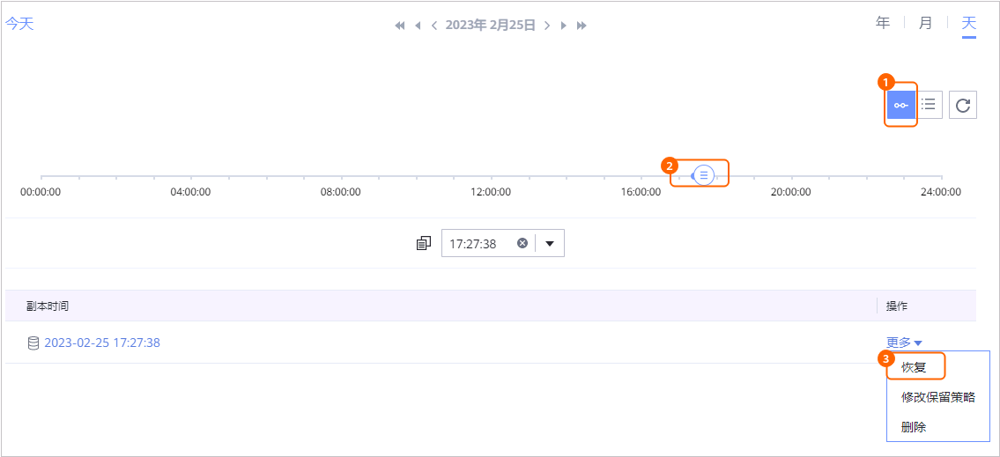

当需要对已备份的数据库进行恢复时，可以参考本节恢复数据库至原位置或新位置。
操作步骤
- 关闭目标数据库。
在目标数据库所在的Windows主机命令提示符（cmd）窗口（您可以使用快捷键Win + R、输入cmd后按Enter进入），依次执行以下步骤，关闭目标数据库：
- 进入手动创建run文件夹和拷贝文件创建的run目录，例如：
C:\>cd usr\sap\EH7\SYS\exe\run
- 执行以下命令，关闭目标数据库。
brconnect -c force -l E -u userName/passWord -f dbshut -f
其中，“userName”和“passWord”为启动数据库并创建数据库用户中创建的数据库用户名和密码。例如：brspace -c force -l E -u user1/Huawei123 -f dbshow -c dbstate
- 进入手动创建run文件夹和拷贝文件创建的run目录，例如：
- 选择“数据利用 > 副本数据 > 应用 > SAP on Oracle”。
- 支持以数据库维度或以副本维度查找副本，本节以数据库维度为例进行说明。
在“资源”页签，根据数据库名称查找到需要恢复的数据库，并单击数据库名称。
- 在“副本数据”页签，依次选择年、月、天找到副本。
当时间下方显示
 ，即表示该月、该天存在副本。
，即表示该月、该天存在副本。 - 指定副本或时间点进行恢复。
- 指定某个副本或两个副本之间的任意时间点进行恢复。
- 指定某个副本进行恢复

- 指定时间点进行恢复。

时间轴上蓝色覆盖区域均可进行时间点恢复，
 表示该时间点存在副本。没有备份日志的时间点无法进行时间点恢复。
表示该时间点存在副本。没有备份日志的时间点无法进行时间点恢复。
- 指定某个副本进行恢复
- 恢复SAP on Oracle数据库至原位置或新位置。
- 恢复SAP on Oracle数据库至原位置。
- 选择恢复至“原位置”。
- 选择是否开启手工设置通道数。
未开启时，默认的通道数为“1”；开启时，用户可手工设置通道数。

通道数，即执行恢复任务时，系统能够同时进行文件拷贝的线程数。每个CPU能够分配一个线程用于执行该恢复任务，设置的通道数应不大于主机的CPU数。请根据主机CPU的利用率和CPU数进行配置。
- 单击“确定”。
- 恢复SAP on Oracle数据库至新位置。
- 选择恢复至“新位置”。
- 配置恢复基本参数。
相关参数说明如表1所示。
- 选择是否开启手工设置通道数。
未开启时，默认的通道数为“1”；开启时，用户可手工设置通道数。
通道数，即执行恢复任务时，系统能够同时进行文件拷贝的线程数。每个CPU能够分配一个线程用于执行该恢复任务，设置的通道数应不大于主机的CPU数。请根据主机CPU的利用率和CPU数进行配置。
- 单击“确定”。
- 恢复SAP on Oracle数据库至原位置。
- 指定某个副本或两个副本之间的任意时间点进行恢复。
- 单击“确定”。